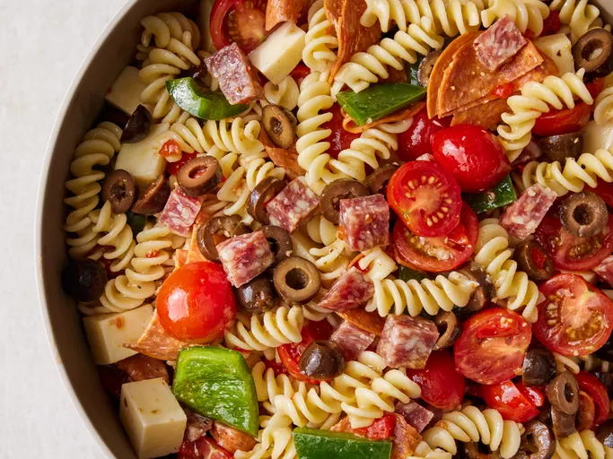

Awesome Pasta Salad

Description
Ingredients
- 1 (16 ounce) package fusilli (spiral) pasta
- 3 cups cherry tomatoes, halved
- 1/2 pound provolone cheese, cubed
- 1/4 pound sliced pepperoni
- 1 large green bell pepper
- 1 can of black olives
- 1 jar of pimentos
- 1 bottle of Italian Dressing
Steps
-
Bring a large pot of lightly salted water to a boil. Cook fusilli pasta
in the boiling water, stirring occasionally, until tender yet firm to
the bite, about 12 minutes. Drain.
-
Combine pasta with tomatoes, cheese, salami, pepperoni, green pepper,
olives, and pimentos in a large bowl. Pour in salad dressing; toss to
coat.
- Enjoy!